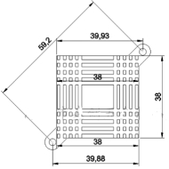
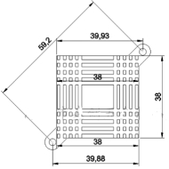
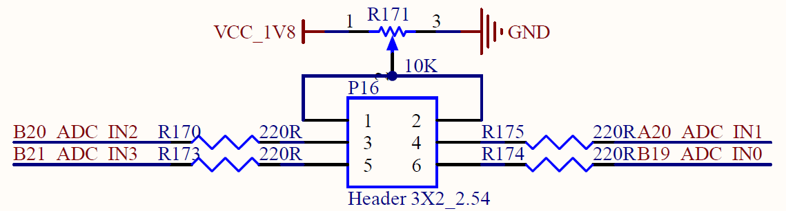

User’s Hardware Manual_V2.1
Document classification: □ Top secret □ Secret □ Internal information ■ Open
Copyright
The copyright of this manual belongs to Baoding Folinx Embedded Technology Co., Ltd. Without the written permission of our company, no organizations or individuals have the right to copy, distribute, or reproduce any part of this manual in any form, and violators will be held legally responsible.
Forlinx adheres to copyrights of all graphics and texts used in all publications in original or license-free forms.
The drivers and utilities used for the components are subject to the copyrights of the respective manufacturers. The license conditions of the respective manufacturer are to be adhered to. Related license expenses for the operating system and applications should be calculated/declared separately by the related party or its representatives.
Overview
This manual is designed to help you quickly familiarize yourselves with the product, understand interface functions and configuration, and primarily discusses the interface functions of the development board, interface introductions, product power consumption, and troubleshooting issues that may arise during use. Some commands were commented to make it easier for you to understand (Adequate and practical for the purpose). Please refer to “OK-MX93xx-C, OK-MX91xx-C Pin Multiplexing Comparison Table” and “OK-MX93xx-C, OK-MX91xx-C Design Guide” provided by Forlinx when referring to pin function multiplexing and hardware troubleshooting methods.
There are total six chapters:
Chapter 1. is CPU overview, briefly introducing its performance and applications;
Chapter 2. is comprehensive introduction to the SoM, including connector pins explanations and function introductions;
Chapter 3. is comprehensive introduction to the development board, divided into multiple chapters, including both hardware principles and simple design ideas;
Chapter 4. mainly describes the board’s power consumption performance and other considerations;
Chapter 5. is the connector style used in the product, which mainly describes the size of the connector and other information;
Chapter 6. is the minimum system of the SoM, which mainly describes the circuit contents and circuit design drawings contained in the minimum system.
Application Scope
This hardware manual is applicable to the development boards of OK-MX93xx-C and OK-MX91xx-C V2.1 and above and the SoM of FET-MX93xx-C and FET-MX91xx-C V1.3 and above.
Revision History
Date |
Manual Version |
SoM Version |
Carrier Board Version |
Revision History |
|---|---|---|---|---|
11/11/2022 |
V1.0 |
V1.0 |
V1.0 |
Initial Version |
21/02/2023 |
V1.1 |
V1.1 |
V1.1 |
Updatin the description of the SoM interface resource network port, standardizing the text writing format, and adjusting the clerical error. |
06/07/2023 |
V1.2 |
V1.1 |
V1.1 |
Modifying patch nut model. |
29/06/2024 |
V2.0 |
V1.3 |
V2.1 |
The SoM is compatible with the NXP i.MX93xx main controller. The silkscreen “FET - MX91xx - C” is added to the SoM, and the SoM version is upgraded to V1.3. The picture of the SoM is modified. To meet the heat dissipation requirements of the mass - production model (MIMX9352CVVXMAB) of the NXP i.MX9352 processor, a heatsink design is added. The size of the carrier board changes from 100×150 mm to 190×130 mm. The carrier Board version is upgraded to V2.1, and the carrier board size and description are corrected. |
17/11/2025 |
V2.1 |
V1.3 |
V2.1 |
Adding NXP i.MX91xx controller descriptions. |
1. Freescale i.MX93 & 91 Description
The i.MX 93 series represents NXP’s latest power - optimized processors, while the i.MX 91 series represents NXP’s latest security - and energy - efficient processors. Both series are suitable for smart homes, building control, contactless human - machine interfaces, IoT edges, and industrial applications.
The i.MX 93 includes a powerful dual - Arm® Cortex® - A55 processor with a speed of up to 1.7 GHz and integrates an NPU, which can accelerate machine learning inference. The general - purpose Arm® Cortex® - M33 with a speed of up to 250 MHz is used for real - time low - power processing. A powerful control network can be implemented through the CAN-FD interface. In addition, dual 1 Gbps Ethernet controllers, one of which supports Time-Sensitive Networking (TSN), can drive gateway applications with low latency.
The i.MX 91 includes an Arm® Cortex® - A55 processor with a speed of up to 1.4 GHz. While maintaining low power consumption, it can achieve a powerful control network through the CAN - FD interface, as well as a dual 1 Gbps Ethernet controller, one of which supports Time - Sensitive Networking (TSN) and can drive gateway applications with low latency.
The i.MX 93/91 is particularly suitable for the following applications:
Smart homes
Building control
Contactless HMI
Commercial level
……
i.MX 93 Processor Block Diagram
i.MX 91 Processor Block Diagram
2. FET-MX9352/9131-C SoM Description
2.1 SoM Appearance

Front (CPU model shown is 9352; the 9131 model differs only in CPU, with identical configurations for all other components).
Back (CPU model shown is 9352; the 9131 model differs only in CPU, with identical configurations for all other components).
2.2 FET-MX9352/ 9131-C SoM Dimension Diagram
FET-MX9352/9131-C SoM Dimension Diagram
Front
Back
Structure size: 33mm×48mm, dimensional tolerance ±0.15mm.
Plate making process: thickness 1.6mm, 6-layer PCB.
Connectors: Double-row 0.4mm pitch, 100pin board-to-board connectors. The model of the SoM connector is DF40C-100 DP-0.4 V (51) with a male socket, and the model of the corresponding carrier board connector is DF40C-100DS-0.4 V (51) with a female socket. See the appendix for the dimensions of the connector;
The patch nut M2 * 1.5 is used to fix the SoM and the carrier board.
2.3 Performance Parameters
2.3.1 System Main Frequency
Name |
Specification |
Description |
|||
|---|---|---|---|---|---|
Minimum |
Typical |
Maximum |
Unit |
||
Main Frequency |
— |
— |
1.7 |
GHz |
— |
RTC clock |
— |
32.768 |
— |
KHz |
— |
2.3.2 Power Parameter
Parameter |
Pin Number |
Specification |
Description |
|||
|---|---|---|---|---|---|---|
Minimum |
Typical |
Maximum |
Unit |
|||
Main Power Supply Voltage |
VSYS |
4.5 |
5 |
5.5 |
V |
— |
No-load current |
VSYS |
— |
125 |
— |
mA |
265mA maximum during start-up |
High-load current |
VSYS |
175 |
180 |
185 |
mA |
CPU load 100% |
2.3.3 Operating Environment
Parameter |
Specification |
Description |
||||
|---|---|---|---|---|---|---|
Minimum |
Typical |
Maximum |
Unit |
|||
Operating Temperature |
Operating Environment |
-40 |
25 |
+85 |
℃ |
Industrial-grade |
Storage Environment |
-40 |
25 |
+125 |
℃ |
||
Humidity |
Operating Environment |
10 |
— |
90 |
％RH |
No condensation |
Storage Environment |
5 |
— |
95 |
％RH |
2.3.4 SoM Interface Speed
Parameter |
Specification |
Description |
|||
|---|---|---|---|---|---|
Minimum |
Typical |
Maximum |
Unit |
||
Serial Port Communication Speed |
— |
115200 |
5M |
Bps |
— |
I2C Communication Speed |
— |
100 |
5000 |
Kbps |
— |
SPI Communication Speed |
52 |
Mbps |
|||
USB interface speed |
— |
— |
480 |
Mbps |
— |
CAN-FD Communication speed |
— |
— |
8 |
Mbps |
— |
2.3.5 SoM ESD Features
Parameter |
Specification |
Description |
|||
|---|---|---|---|---|---|
Minimum |
Typical |
Maximum |
Unit |
||
Human Body Model (HBM) |
— |
±1000 |
— |
V |
— |
Charged Device Model (CDM) |
— |
±250 |
— |
V |
— |
2.4 SoM Interface Speed
Function |
Quantity |
Parameter |
|---|---|---|
MIPI CSI (91 no) |
≤1 |
The key features of the MIPI CSI - 2 controller are as follows: • MIPI CSI - 2 Specification v1.3 and MIPI D - PHY Specification v1.2; • Supports up to 2 R x data channels (plus 1 Rx clock channel); • MIPI CSI - 2 support: – Pixel clock up to 200 MHz (at nominal voltage and overdrive voltage); – Supports up to approximately 150 Mpixel/s; – Operates at data rate speeds from 80 Mbps to 1.5 Gbps per channel. • Supports low - power operation at a data rate of 10 Mbps. |
Ethernet |
≤2 |
Supports 2 x RGMII interfaces and complies with IEEE 802.02 specification; 1x supports TSN and 2 x support IEEE 1588 standard. |
LCD |
≤1 |
24-bit parallel RGB up to 1366x768p60 or 1280x800p60. |
LVDS (91无) |
≤1 |
Single channel (4-lane) supports 720p 60 up to 1366x768p60 or 1280x800p60. |
MIPI DSI (91 no) |
≤1 |
The main functions of the MIPI DSI controller are as follows: • Supports a 4 - channel MIPI DSI display, with pixels sourced from LCDIF; • Compatible with MIPI DSI Specification v1.2 and MIPI D - PHY Specification v1.2; • Supports resolutions such as 1080p60 or 1920x1200p60; • The maximum data rate per lane is 1.5 Gbps. |
SAI |
≤3 |
The SAI module provides a synchronous audio interface (SAI). SAI1 supports 2 channels; SAI2 supports 4 channels; SAI3 supports 1 channel. It supports a full - duplex serial interface with frame synchronization, such as I2S, AC97, TDM, and codec/DSP interfaces. |
JTAG |
≤1 |
The development board provides a JTAG interface through a 2 x 5 socket with a 2.0mm pitch |
SD/SDIO |
≤2 |
uSDHC1 is used internally on the SoM; uSDHC2 is a 4 - bit SD card 3.0, compatible with 200MHz SDR signaling and supporting speeds up to 100MB/s; uSDHC3 is a 4 - bit SDIO3.0. |
USB |
≤2 |
The CPU contains 2 x USB 2.0 controllers with integrated PHY inside. |
I3C |
≤2 |
Two improved Inter - Integrated Circuit (I3C) modules. I3C is a serial interface used to connect peripheral devices and application processors. It supports the 400Kbit/s Fast Mode and the 1000Kbit/s Fast Mode Plus. It is backward - compatible with I2C. |
SPI |
≤7 |
Supports both master and slave mode configurations. |
I2C |
≤8 |
In standard mode, the maximum supported rate is 100Kbit/s; in fast mode, the maximum supported rate is 400Kbit/s; in fast - mode plus, the maximum supported rate is 1000Kbit/s; in high - speed mode, the maximum supported rate is 3400Kbit/s; in ultra - fast mode, the maximum supported rate is 5000Kbit/s; in slave mode, high - speed mode and ultra - fast mode are supported. |
UART |
≤8 |
Supports a maximum baud rate of 5Mbps. |
CAN-FD |
≤2 |
The CAN-FD module is a communication controller that implements the CAN protocol according to the ISO11898-1standard and the CAN 2.0B protocol specification. |
MQS |
≤2 |
The MQS is used to generate medium quality audio via GPIO, allowing users to connect stereo speakers or headphones to a power amplifier without the need for an additional audio chip. |
ADC |
≤4 |
The ADC is a 12-bit, 4-channel, 1MS/s ADC. |
PDM |
≤1 |
It is a 24-bit PDM module with linear phase response that supports high AOP microphones for audio quality applications. |
TPM |
≤6 |
Timer/PWM module, 16-bit counter, supports free-running counter or modulo count mode, can count up or down. It can be configured for input capture, output comparison, edge-aligned PWM mode, or center-aligned PWM mode. |
Note:
1. The above table mainly describes the resource quantities of the 93 model. There are certain differences between the 91 model and the table, and generally, the resources of the 91 model are fewer than those of the 93 model. For specific details, please refer to the “Pin Multiplexing Comparison Table for OK - MX93xx - C and OK - MX91xx - C”;
2. The parameters in the table are the theoretical values for hardware design or the CPU;
3. “TBD” means the function is not yet developed.
2.5 FET-MX9352/9131-C SoM Pins Definition
2.5.1 FET-MX9352/9131-C SoM Pins Schematic
Note: The 93 and 91 models share the same schematic package, but the 91 model does not have the MIPI DSI/MIPI CSI/LVDS functions.
2.5.2 FET-MX9352/9131- C Pin Function Description
When you have various functional expansion requirements, you can refer to the user document “Pin Multiplexing Table for FET - MX93xx - C and FET - MX91xx - C”. However, if you need more detailed information, it is recommended to consult relevant documents, chip data sheets, and reference manuals.
2.6 FET-MX9352/9131-C SoM Hardware Design Description
FET-MX9352/ 9131-C SoM integrates the power supply, reset monitoring circuit, and storage circuit into a compact module. The required external circuits are very simple. To form a minimal system, only a 5V power supply, a reset button, and boot configuration are needed to run the system, as shown in the following figure:
Please refer to “Appendix VI.” for the minimal system schematic diagram However, in most cases, it is recommended to connect some external devices in addition to the minimal system, such as a debugging serial port, otherwise, you can not check whether the system is booted. After completing these steps, additional user-specific functions can be added based on the default interface definitions provided by Forlinx for the SoM.
Please refer to section “3.5 OK- MX93xx/ 91xx Carrier Board Description” for the peripheral circuits.
3. OK-MX9352 & 9131-C Embedded Platform Description
3.1 OK-MX9352/9131-C Development Board Interface Diagram
The connection method between carrier board and SoM is board to board. The carrier board supports several SoMs from the MX93 and MX91 series. As a result, the PCB silkscreen and the development board names will show “OK - MX93xx - C” and “OK - MX91xx - C” to indicate compatible CPU series. The main interfaces are shown in the figure below:

Front
Back
3.2 OK-MX9352/9131-C Development Board Dimension Diagram
OK-MX9352/ 9131-C SoM Dimension Diagram
PCB Size: 130mm × 190mm
Fixed hole size: spacing: 120mm × 180mm, hole diameter: 3mm
Plate making process: thickness 1.6mm, 4-layer PCB
Power supply voltage: DC 12V
Two mounting holes with a diameter of 3.2mm are reserved on the carrier board OK-MX93xx/91xx-C V2.1 You can select and install the heat sink according to the site environment. Please add a layer of insulated heat-conducting silicone pad on the contact surface between the heat sink and the core board. 38Mm×38mm×10mm. For more detailed dimensions, please refer to the following figure.
 

3.3 Carrier Board Naming Rules
A-B-C+DEF:G-H
Field |
Field Description |
Value |
Description |
|---|---|---|---|
A |
Product Line Identification |
OK |
Forlinx Embedded development board |
B |
CPU Name |
MX93xx MX91xx |
MX9352 MX9131 |
- |
Segment Identification |
- |
Parameter segment sign |
C |
Connection |
C |
Board to Board Connector |
+ |
Segment Identification |
+ |
The configuration parameter section follows this identifier. |
D |
Type |
M |
Carrier board (Note: Carrier board identification M is not filled in by default) |
E |
Operating Temperature |
I |
-40 to 85℃ industrial level |
F |
PCB Version |
21 |
V2.1 |
: |
Internal Identification of the Manufacturer |
： |
This is the internal identification of the manufacturer and has no impact on the use. |
G |
Connector origin |
1 |
Imported connector |
3.4 Carrier Board Resources
Function |
Quantity |
Parameter |
|---|---|---|
LCD |
1 |
RGB888 24 bit, supports up to 1366x768p60 or 1280x800p60 |
LVDS (91 no) |
1 |
Single 8-bit, supports up to 1366x768p60 or 1280x800p60. |
MIPI DSI (91 no) |
1 |
4-chanel, supports up to 1920x1200p60. |
MIPI CSI (91 no) |
1 |
2-channel, supports up to1.5Gbps, conforming to the V1.2 protocol specification. Adapt to the OV5645 module. |
TF Card |
1 |
1 x TF card, which can be used for system flashing and supports SD card 3.0 protocol. |
Ethernet |
2 |
2 x 10M/100M/1000M network ports, of which ENET1/ETH1 supports TSN function. |
GPIO |
28 |
Dual-row pins are led out for LCD multiplexing. |
ADC |
4 |
12Bit ADC, sampling rate 1MS/s |
CAN-FD |
2 |
With 4 levels of electrostatic, surge and pulse protection, electrical isolation, and complies with CAN 2.0 B protocol specifications. |
RS485 |
2 |
With static electricity, surge, pulse four levels of protection, electrical quarantine, automatic transceiver control. |
USB2.0 |
2 |
USB1 is led out by TYPE-C and can be used for flashing. The other USB2 is connected to 4G module, WIFI/BT, USB to four serial ports and USB-A female socket through HUB expansion. |
DEBUG |
1 |
The serial port is converted to USB through debugging, and is led out through TYPE-C. |
WIFI/Bluetooth |
1 |
On-board BL-M8723DU，2.4GWiFi，Bluetooth 2.1/4.2。 |
RTC |
1 |
On-board CR2032 battery, keep going when power is off |
Audio |
1 |
A four-section headphone stand with dual-channel HP and MIC, and two speaker interfaces. |
4G |
1 |
Mini- PCIe interface, adapted to EC20 module with external antenna. |
KEY |
3 |
Reset, power on/off, and user-defined keys. |
LED |
1 |
User-defined light. |
UART |
2 |
3.3 VTTL level, led out through 2.54 pitch pin row. |
JTAG |
1 |
Used for debugging, currently untested |
Note: The parameters in the table are the theoretical values of hardware design or CPU.
3.5 OKMX93xx/91xx -C Carrier Board Description
Note: In the figure below, if the component tag number is marked with “_ NC”, it means that the component is not welded by default.
The schematic diagram in this chapter is only for the easy reading and may be subject to changes. Please make sure to follow the source file schematic diagram when designing.
3.5.1 Carrier Board Power
Carrier board power supply is DC 12V, led in through DC-005 socket (P14). The 12V DC power supply passes through a self - recovering fuse and an anti - reverse connection diode, and then is stepped down to 5V by the MP8765. This power supply is uncontrolled, and its network name is VDD_5V. Then it is stepped down to 3.3V by the MP1605. This power supply is controlled, and its network name is VCC_3V3. Finally, it is stepped down to 1.8V by the RT9013. This power supply is also controlled, and its network name is VCC_1V8.
When the NVCC_AON pin outputs a high level, the MOS tube conducts, and VDD_5V can output VCC_5V, VCC_3.3V, and VCC_1V8 to supply power to each circuit on the carrier board.
This circuit is to ensure that the SoM is powered on first, and followed by the carrier board, so as to prevent the damage to the CPU caused by latch-up effects.
3.5.2 Switch Key & Reset Key
K3 in the upper - left corner of the development board is the power - on/off key of the development board, with a function similar to the power - on/off key of a mobile phone. Press and hold this key to turn on the board, and press and hold it again to turn it off.
K2 in the upper - left corner of the development board is the hard - reset key of the development board. After pressing it, all the power supplies on the SoM can be turned off to achieve the function of power - off reset for the whole board.
3.5.3 Boot Configuration
The i.MX93xx/91xx has multiple programming and startup modes. After the system is powered on or reset, different programming and startup modes are selected by reading the status of the system startup configuration pins. The development board uses E21_UART1_TXD, F21_UART2_TXD, G21_SAI1_TXFS, and H21_SAI1_TXD0 as the system startup configuration pins. Due to the multiplexing relationship with relevant functions, it is necessary to ensure that the actual functional circuits do not affect the startup item circuits. It is recommended to add an analog switch to ensure that the startup items are not affected by other circuits.
There are 16 states in i.MX93/91 startup item:
BOOT_MODE[3:0] |
BOOT CORE |
Function |
|---|---|---|
0000 |
Cortex-A55 |
Boot from Internal Fuses |
0001 |
Cortex-A55 |
Serial Download (USB1/2) |
0010 |
Cortex-A55 |
uSDHC1 8-bit eMMC 5.1 |
0011 |
Cortex-A55 |
uSDHC2 4-bit SD 3.0 |
0100 |
Cortex-A55 |
FlexSPI Serial NOR |
0101 |
Cortex-A55 |
FlexSPI Serial NAND 2K |
0110 |
Cortex-A55 |
Reserved |
0111 |
Cortex-A55 |
Reserved |
1000 |
Cortex-M33 |
LPB:Boot from Internal Fuses |
1001 |
Cortex-M33 |
LPB: Serial Downloader (USB1) |
1010 |
Cortex-M33 |
LPB: uSDHC1 8-bit 1.8 V eMMC 5.1 |
1011 |
Cortex-M33 |
LPB: uSDHC2 4-bit SD 3.0 |
1100 |
Cortex-M33 |
LPB: FlexSPI Serial NOR |
1101 |
Cortex-M33 |
LPB: FlexSPI Serial NAND 2K |
1110 |
Cortex-M33 |
Reserved |
1111 |
Cortex-M33 |
Reserved |
Currently, the boot options supported by the SoM include A55 OTG flashing boot, A55 eMMC boot, and A55 TF card boot.
The boot option pins on the SoM feature internal pull-up and pull-down resistors, with a default state of 0010 configured for Cortex-A55 eMMC boot. The boot circuit on the carrier board complements the pull-up and pull-down settings of the SoM, enabling for different boot options switch via a DIP switch on the carrier board.
The system boot configuration switch on the development board is S3: right for on, left for off. System flashing & boot modes are configured as:
S3:BOOT |
1 |
2 |
3 |
4 |
|
|---|---|---|---|---|---|
OTG |
Cortex-A55 |
ON |
ON |
OFF |
OFF |
eMMC |
Cortex-A55 |
OFF |
OFF |
OFF |
OFF |
TF Card |
Cortex-A55 |
ON |
OFF |
OFF |
OFF |
OTG |
Cortex-M33 |
ON |
ON |
OFF |
ON |
eMMC |
Cortex-M33 |
OFF |
OFF |
OFF |
ON |
TF Card |
Cortex-M33 |
ON |
OFF |
OFF |
ON |
3.5.4 Debugging Serial Port
The debug serial port is TYPE-C interface. The CH342 chip is used to convert the two debugging serial ports of Cortex - A55 and Cortex - M33 into a set of USB buses, which is convenient for use and simultaneous debugging of the two cores.
UART1 is the Cortex - A55 debugging serial port, with 2 lines and a 3.3V level. UART2 is the Cortex - M33 debugging serial port, also with 2 lines and a 3.3V level.
The debugging serial port signal of the SoM first passes through a buffer chip and then an adapter chip before reaching the TYPE - C interface. This setup ensures that there is no electrical leakage between the SoM and the carrier board when the debugging serial port is plugged in while the carrier board is unpowered.
Note: To facilitate subsequent debugging, please lead out this debugging serial port when designing the carrier board by yourself. It is not recommended to use it as a general serial port.
3.5.5 ADC Interface
The SoM supports 4 x native ADC. The development board is led out via pins with a 2.54 mm pitch and is configured with a slide potentiometer. The ADC acquisition function can be achieved by connecting the middle pin of the slide potentiometer to the ADC pin. Among them, pins 1 and 2 of P16 are the middle pins of the sliding potentiometer, and the remaining four pins are all ADC pins, with corresponding silkscreen markings on the PCB.

3.5.6 Audio
The development board has 1 x HP/MIC interface and 2 x SPAKER interfaces. The HP/MIC interface is led out through a four - section headphone jack and can realize both recording and playback simultaneously. The 2 x SPAKER interfaces are led out through white terminal blocks with a 2.54mm pitch. The earphone has the function of plug detection. When the earphone is plugged in, the playback will automatically switch to the earphone channel, and the SPAKER will not play.
The audio chip NAU88C22 is equipped with a class-D power amplifier output terminal, which can drive two 8Ω speakers with a maximum output power of 1 W. If a larger external power amplifier is required, the signal can only be obtained from the earphone socket, not from the speaker interface.
Note: The power of the speakers is a Class D amplifier (Not analog amplifier). Connect a speaker to each socket, and not to share the speaker wire, nor connect the speaker to the ground wire.

3.5.7 Dual Gigabit Ethernet
The SoM supports up to 2 x Gigabit Ethernet ports. The development board provides two Gigabit Ethernet interfaces, both of which are connected to the PHY chip RTL8211 in the RGMII interface form and led out by RJ45 sockets, namely P8 and P7. The socket model is FC - H021LNL, with a built - in isolation transformer. Among them, ENET1/ETH1 supports the TSN function.
Note: When designing the PCB, ensure that the PHY chip has a complete ground.
3.5.8 JTAG Simulation Debugging Interface
The development board provides a JTAG debugging interface (P15), which is convenient for users to simulate and debug i.MX93x.

3.5.9 LCD Display Interface
The SoM supports a parallel 24 - bit LCD, with a maximum of RGB888 24 - bit and a maximum resolution of 1366x768p60 or 1280x800p60. The development board provides a general liquid crystal display interface, which is led out through a 54P FPC socket P4 with a 0.5mm pitch and can be connected to resistive touch screens and capacitive touch screens of different specifications and sizes produced by Forlinx. The LCD interface is connected in RGB 888 24bit mode.
Note:
1. The resistive touch uses an external resistive touch chip solution. When the resistive touch is not used, the relevant circuits of TSC2007 can be removed to disable this function;
2. The data pins of the screen are completely multiplexed with the GPIO pins of the development board. Attention should be paid not to use them simultaneously.
3.5.10 USB1/ TYPE-C Interfaces
USB1 is an interface with OTG function. The master - slave mode can be switched through the 8th DIP switch S1 on the carrier board. When the development board needs to be connected to the host computer as a slave device, the 8th DIP switch S1 should be in the OFF state, and it is connected to the host computer through the TYPE - C interface P25 on the carrier board; when the development board needs to connect other devices as a master device, the 8th DIP switch S1 should be in the ON state, and it is connected to other devices through the TYPE - C interface P25 on the carrier board. (Note: When the DIP switch is in the ON state (master mode), it is prohibited to connect to the host computer through this interface!)
In slave mode, when the master device (such as a computer) is connected to the TYPE - C socket via a cable, the USB1 _ ID signal cuts off the power supply from the carrier board to the TYPE - C interface, ensuring that the 5V from the master device does not conflict with the 5V of the development board. In master mode, when the slave device is connected to the TYPE - C socket via a cable, the USB1 _ ID signal turns on the power supply of the carrier board to ensure normal power supply to the slave device.
3.5.11 TF Card Interface
There is a TF card interface on the development board, which uses the SD2 bus, and supports the SD Card 3.0 protocol. The SoM can autonomously switch the level of the high and low speed cards and manage the power supply. When designing, please use the special power supply pin VSD _ 3V3 of the SoM to supply power to the TF card. It is not recommended to use other power supplies.
3.5.12 RTC Interface
The development board has a RTC circuit, which is connected to the I2C3 bus. The CR2032 button battery can be used to save the time when the development board is not powered on, and the time will be saved in real time. After the development board is powered on, the existing time will be read from the RTC again and written into the system.
3.5.13 UART Interface
There are 2 x UART interfaces on the development board, which are not the native UART interfaces of the SoM, but are transferred through the USB2 interface. The 3.3 V TTL level and two-wire serial port are led out through the P19 pin with a pitch of 2.54 mm.
3.5.14 MIPI DSI Interface
The SoM supports MIPI DSI 4 channels, with a maximum support of 1920x1200p60. The development board provides a universal LCD interface, which can be connected to the MIPI capacitive touch screen produced by Forlinx through a 0.5mm FPC seat P3 with a pitch of 30 P. The LCD interface uses MIPI DSI 4-channel connection with a resolution of 1280 * 800. (91 doesn’t have this function)
3.5.15 LVDS Interface
The SoM supports a single eight - channel LVDS, with a maximum support for 1366x768p60 or 1280x800p60. The development board provides a general LCD display interface, which is led out through a double - row pin header P5 with a 2.0mm pitch and 38 pins, and can be connected to the LVDS capacitive touch screen produced by Forlinx. This LCD display interface uses a single eight - channel connection method, with a resolution of 1280*800. (91 doesn’t have this function)
3.5.16 Touch Interface
When designing the touch function of the System on Module (SoM), a multiplexing approach is employed to achieve full support for various touch technologies while minimizing pin usage. This design accommodates LCD resistive touch, LCD capacitive touch, MIPI capacitive touch, and LVDS capacitive touch. By using the same two signals to connect the reset and interrupt signals for different touch types, ensure that each touch function operates independently, thereby reducing the overall number of pins required. The resistive touch also uses a dedicated external touch chip, TSC2007. Select the touch type used for access through the dial S1, and there is a silk-screen logo on the PCB board. The dial sequence is as follows:
S1:TP |
1 |
2 |
3 |
4 |
5 |
6 |
7 |
8 |
|---|---|---|---|---|---|---|---|---|
LCD-R |
ON |
OFF |
OFF |
OFF |
OFF |
OFF |
OFF |
- |
LCD-C |
OFF |
OFF |
OFF |
OFF |
OFF |
ON |
ON |
- |
LVDS |
OFF |
ON |
ON |
OFF |
OFF |
OFF |
OFF |
- |
MIPI |
OFF |
OFF |
OFF |
ON |
ON |
OFF |
OFF |
- |
3.5.17 GPIO Interface
To ensure the expandability of the SoM, a set of GPIO interfaces is reserved on the development board, which are led out through double - row pins with a 2.54mm pitch. These interfaces are fully multiplexed with the LCD function, and only one can be used at a time. This set of pins can be multiplexed for many functions. For details, please refer to the pin multiplexing comparison table in the hardware documentation.
3.5.18 4G Interface
The development board is equipped with a Mini - PCIe interface and has a USB protocol cable, which can support Mini - PCIe interface devices with USB protocols such as 4G modules. By default, the development board comes with the EC20 module, enabling 4G Internet access. This interface is powered by an independent power supply, currently providing 3.3V3A, which can meet the requirements of most modules.
3.5.19 USB HUB
The SoM natively supports two USB interfaces. To ensure its expandability, the development board uses the USB2.0 HUB chip FE1.1S to expand the native USB interfaces. The USB2 bus is used, and after expansion, they are respectively connected to the USB - to - serial port, USB - A female socket, WiFi/BT, and 4G.
3.5.20 RS-485 Interface
The two serial ports expanded by the development board using USB lead out two RS - 485 interfaces through the circuit. Based on the RS - 485 standard protocol, it has the function of automatic transceiver control and also adds a protection circuit. It can pass the national standard’s four - level ESD/EFT/SURGE test level, with high security.
3.5.21 CAN FD Interface
The development board uses the native CAN FD to lead out two CAN FD interfaces. Based on the CAN 2.0B protocol specification, it also adds a protection circuit. It can pass the national standard’s four - level ESD/EFT/SURGE test level, with high security.

3.5.22 WiFi/BT Interface
The development board uses the USB interface to expand the WiFi/BT function. It is on - board with BL - M8723DU, supporting 2.4G WiFi and Bluetooth 2.1/4.2, and is equipped with an independent antenna interface and a separate power supply control function.
3.5.23 MIPI CSI Interface
The SoM natively supports MIPI CSI, with 2 channels and a maximum rate of 1.5Gbps, complying with the V1.2 protocol specification. The development board features a MIPI CSI function that is led out through a 26PIN FPC connector. This function interface is powered by an independent power supply and supports connection with the Forlinx OV5645 camera module. (91 doesn’t have this function)

3.5.24 I2C Interface
There 3 x I2C on the OKMX93xx/91xx-C development board, and the level are 3.3V.
Since the CPU communicates with the PMIC and EEPROM via I2C2, the I2C2 has been pulled up on the SoM. The address of the PMIC is 0x25, and the address of the EEPROM is 0x51. Please pay attention when using the I2C bus. At the same time, do not perform pull - up processing on the I2C2 bus on the carrier board, as it may cause abnormal startup of the SoM.
As the I2C bus on the camera requires a level of 1.8V, I2C3 is connected to the PMIC through two 0ohm resistors, and level conversion is performed on the SoM. Meanwhile, pull - up processing is also done on the SoM. When using the PMIC level conversion function, do not connect pull - up resistors on the carrier board. There are 1.5K pull - up resistors both before and after the conversion on the SoM. When not using the PMIC level conversion function, please add pull - up resistors to the corresponding I2C bus on the carrier board.
3.5.25 User-defined Pins
The carrier board reserves a user - defined indicator light D6 and a user - defined button K1 through two IO respectively.
Note：
1. The signals of the mounting holes at the four corners of the development board are different. The signal of the mounting hole near the P27 green terminal is PE, and the other three are GND. Do not connect these two signals to each other during use;
2. The P27 green terminal has a PE signal. When using it, the PE signal on the green terminal needs to be well grounded to ensure a good discharge path for high - voltage energy.
4. OKMX93xx/91xx-C Development Board Linux System Power Consumption Table
FET-MX93xx-C SoM V1.1+OK-MX93xx-C Carrier board V1.1+linux5.15.52 System
o. |
Test Item |
Power Voltage (V) |
Working Current |
|
|---|---|---|---|---|
Instantaneous Peak (mA) |
Stable Value (mA） |
|||
1 |
Not connected to the display screen + no operation |
12V±5% |
240 |
190 |
2 |
On-load 7-inch screen + no operation |
12V±5% |
445 |
365 |
3 |
On-load 10.1-inch screen + no operation |
12V±5% |
525 |
425 |
4 |
On-load 4G + no operation |
12V±5% |
260 |
200 |
5 |
On-load 7-inch LCD screen + 7-inch MIPI screen + 10.1-inch LVDS screen + 4G + 100% CPU usage |
12V±5% |
1040 |
960 |
6 |
Development board sleep |
12V±5% |
— |
123 |
7 |
SoM sleep |
5V±5% |
— |
100 |
FET-MX93xx-C SoM V1.3+OK-MX93xx-C Carrier board V2.1+Linux6.1.36 System
No. |
Test Item |
SoM Power |
Development board power (including SoM) |
|---|---|---|---|
1 |
Sleep |
0.046W |
1.08W |
2 |
Not connected to the display screen + no operation |
0.68W |
2.52W |
3 |
On-load 7-inch screen + no operation |
0.715W |
4.56W |
4 |
On-load 10.1-inch screen + no operation |
0.71W |
6.25W |
5 |
On-load 7-inch MIPI screen + no operation |
0.715W |
5.16W |
6 |
On-load 4G + no operation |
0.725W |
3W |
7 |
On-load 7-inch LCD screen + 7-inch MIPI screen + 10.1-inch LVDS screen + 4G + 100% usage |
1.475W |
12.36W |
FET-MX91xx-C SoM V1.3+OK-MX91xx-C Carrier board V2.1+Linux6.1.36 System
No. |
Test Item |
SoM Power |
Development board power (including SoM) |
|---|---|---|---|
1 |
Sleep |
0.034W |
1.032W |
2 |
Not connected to the display screen + no operation |
0.55W |
2.148W |
3 |
On-load 7-inch screen + no operation |
0.585W |
4.188W |
6 |
On-load 4G + no operation |
0.55W |
2.484W |
7 |
On-load 7-inch LCD screen + 7-inch MIPI screen + 10.1-inch LVDS screen + 4G + 100% usage |
0.585W |
4.668W |
Note:
1. Peak Current: Maximum current value during booting;
2. Stable Value: Current value stays on the boot screen after booting.
5. Connector Dimension Diagram
5.1 Appendix I. Connector Dimensions
The model of the SoM connector is DF40C-100 DP-0.4 V (51), male seat, 100P, 0.4mm, and the specifications of the SoM connector are as follows:
The model of the corresponding carrier board connector is DF40C-100DS-0.4 V (51), female, 100 P, 0.4mm, with a height of 1.5mm. The specifications of the carrier board connector are as follows:
6. Minimum System Schematic
6.1 Minimum System Schematic Diagram
The SoM is designed to support power - on startup. It can be started as long as there is a 5V main power supply for the SoM. However, to ensure that the SoM can be programmed and print information can be viewed, it is recommended to retain the startup item circuit, USB programming circuit or TF card programming circuit, DEBUG circuit, and reset button. Note that no pull - up resistors should be added in the design of the reset button.